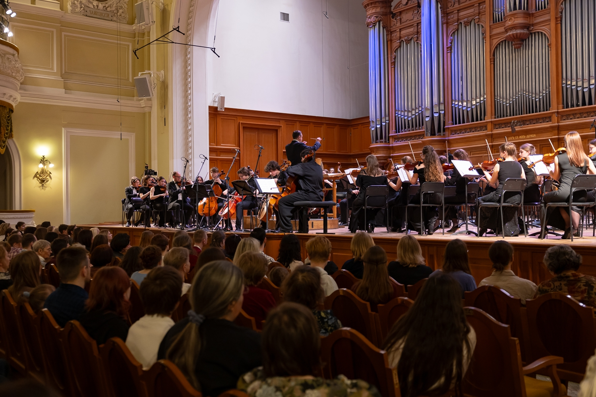
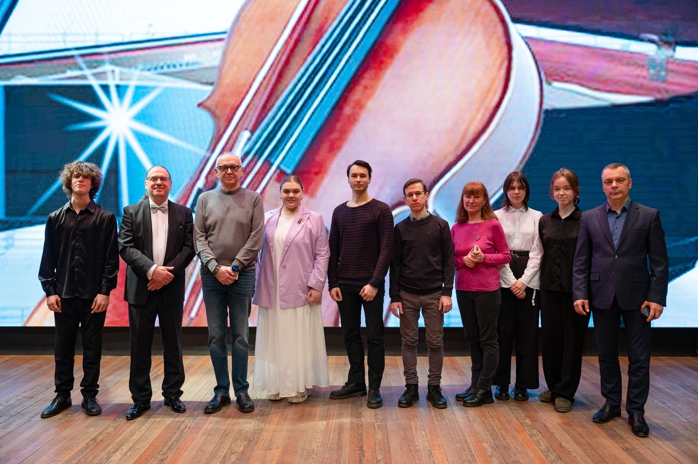
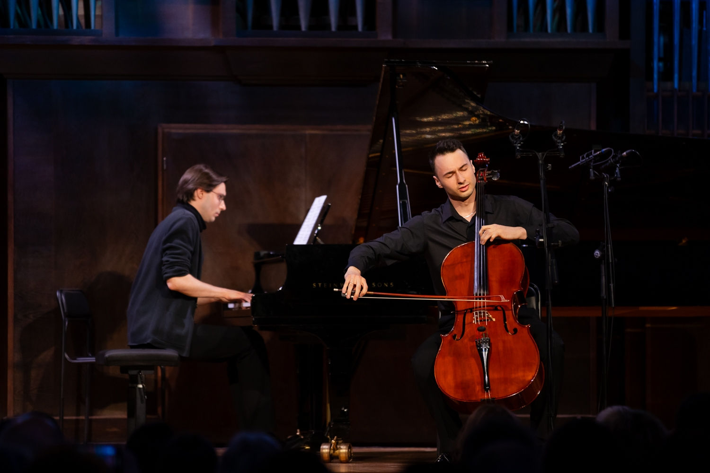
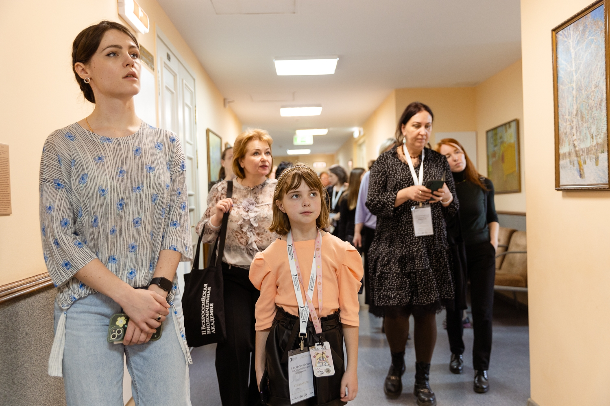
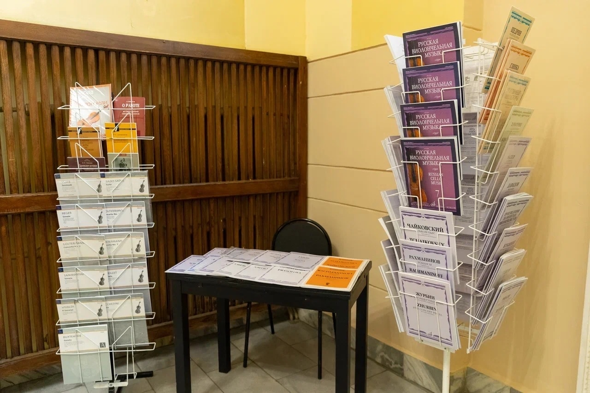
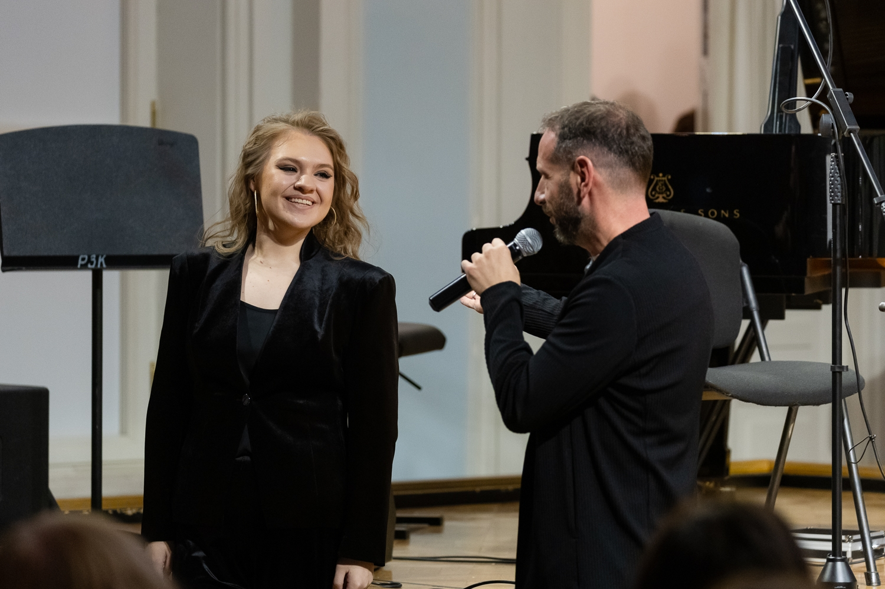
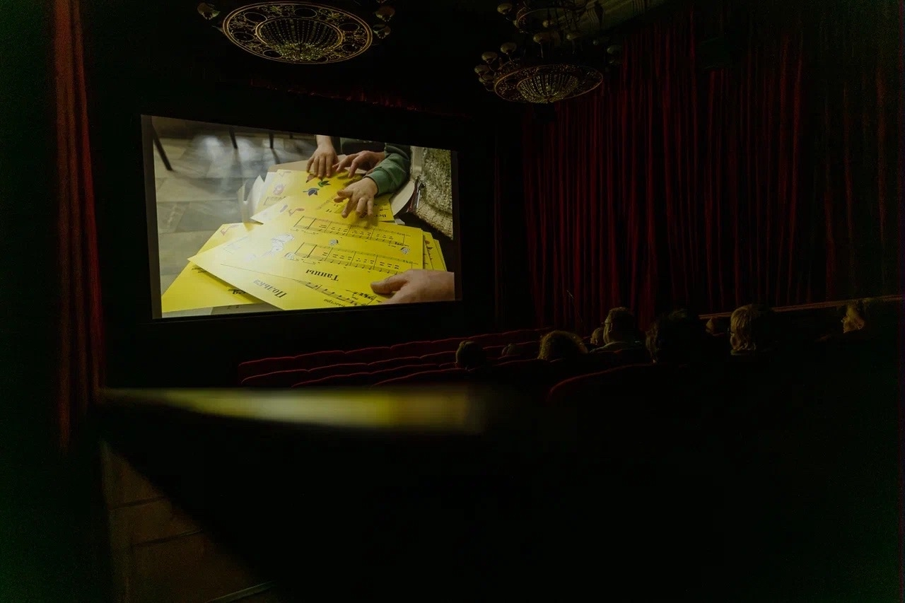

Сотрудничество
Виолончельная академия — частная культурная инициатива, которая создаёт и реализует собственные проекты, направленные на развитие виолончельной культуры. Наши приоритеты отражены в разделе «Цели и миссия».
Мы рассматриваем предложения, которые представляют художественный и содержательный интерес для Академии и приносят пользу виолончельному сообществу. Возможность совместной работы зависит от решения художественного руководства, планов сезона и организационных ресурсов. Формат и условия сотрудничества обсуждаются индивидуально.






Сотрудничество с музыкантами и педагогами строится вокруг участия в конкретных концертных и образовательных проектах Академии. Информация о возможностях участия публикуется на страницах проектов и в объявлениях об открытых наборах. Подробнее о прослушиваниях — в разделе «Открытые прослушивания».
Академия не оказывает услуги по индивидуальному продвижению и менеджменту артистов. Обращение с предложением само по себе не предполагает включения в концертные или образовательные программы.
Мы рассматриваем предложения о проведении проектов Академии на новых площадках, совместных концертах, образовательных событиях и профессиональных встречах. Возможно участие Академии в фестивалях с отдельным проектом, разработка художественной программы в отдельно взятых случаях и информационное партнёрство.
Поездки в регионы России организуются в рамках проекта «Виолончельная академия в регионах». Для проведения событий необходима принимающая сторона, готовая содействовать в предоставлении площадки и решении организационных вопросов на месте.
Академия также открыта к обсуждению международных творческих и образовательных проектов.
В редакцию CelloЖурнала можно направить готовую статью или предложить тему публикации. Решение принимает редакционная комиссия с учётом содержания материала, тематики и объёма номера.
С издательствами, библиотеками и владельцами архивов возможно сотрудничество в работе с историческими материалами, подготовке и издании книг и нот.
Возможные направления сотрудничества — освещение деятельности Академии, информационное партнёрство и подготовка совместных просветительских материалов.
Предложить сторонний проект для публикации можно через сообщество Академии во «ВКонтакте». Размещение рассматривается индивидуально. На сайте и в других социальных сетях Академии сторонние анонсы не публикуются.
Мы рассматриваем предложения о совместных культурных и просветительских инициативах. Сотрудничество с музыкальными мастерами, производителями и профильными компаниями возможно как в отдельных проектах, так и в рамках ежегодной Всероссийской виолончельной академии.
Если вы хотите предложить свои профессиональные компетенции для работы над проектами Академии, можно направить предложение и портфолио на почту org@cello-academy.ru
Набор волонтёров проводится для конкретных проектов. Объявления о таких возможностях публикуются в новостях Академии.
Как связаться
Идеи и предложения о сотрудничестве, материалы для редакции и вопросы о региональных проектах можно направлять на почту org@cello-academy.ru